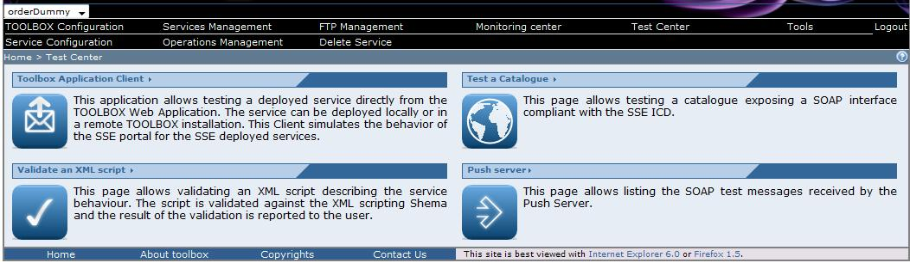

The Toolbox Application Client is a stand alone application that can be used to test a local as well as a remote Toolbox installation. It implements a generic client, a catalogue client a Toolbox Services client.

The clients can be lounched selecting the Toolbox Application Client section or the test Catalogue section (two different interfaces belonging to the same application will be opened).
 if you click on the Toolbox Application Client when a service is selected it will open the Toolbox service client. If no services are selected it will automatically open the Web Service Generic client.
if you click on the Toolbox Application Client when a service is selected it will open the Toolbox service client. If no services are selected it will automatically open the Web Service Generic client.